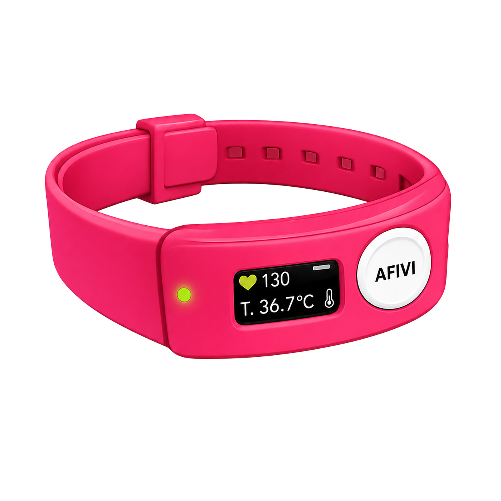

Detecta cambios fisiológicos antes de que ocurran episodios críticos mediante sensores biométricos, análisis en tiempo real y alertas personalizadas.

Muchas personas no detectan señales tempranas de ansiedad.
Los estímulos del entorno pueden generar desregulación.
Los episodios vestibulares suelen ocurrir sin aviso claro.
La pulsera recopila señales fisiológicas.
Compara los datos con el perfil basal del usuario.
Notifica antes de un posible episodio.
Se recomienda despejarte un poco.
PulseGuard transforma señales fisiológicas en información comprensible para el usuario. La aplicación analiza continuamente los datos provenientes de la pulsera y entrega alertas preventivas antes de posibles episodios.
Prevención
Posible Evento
Contacto de Emergencia
Jefa de Proyecto
Documentación
Software y Aplicación
Hardware y Sensores